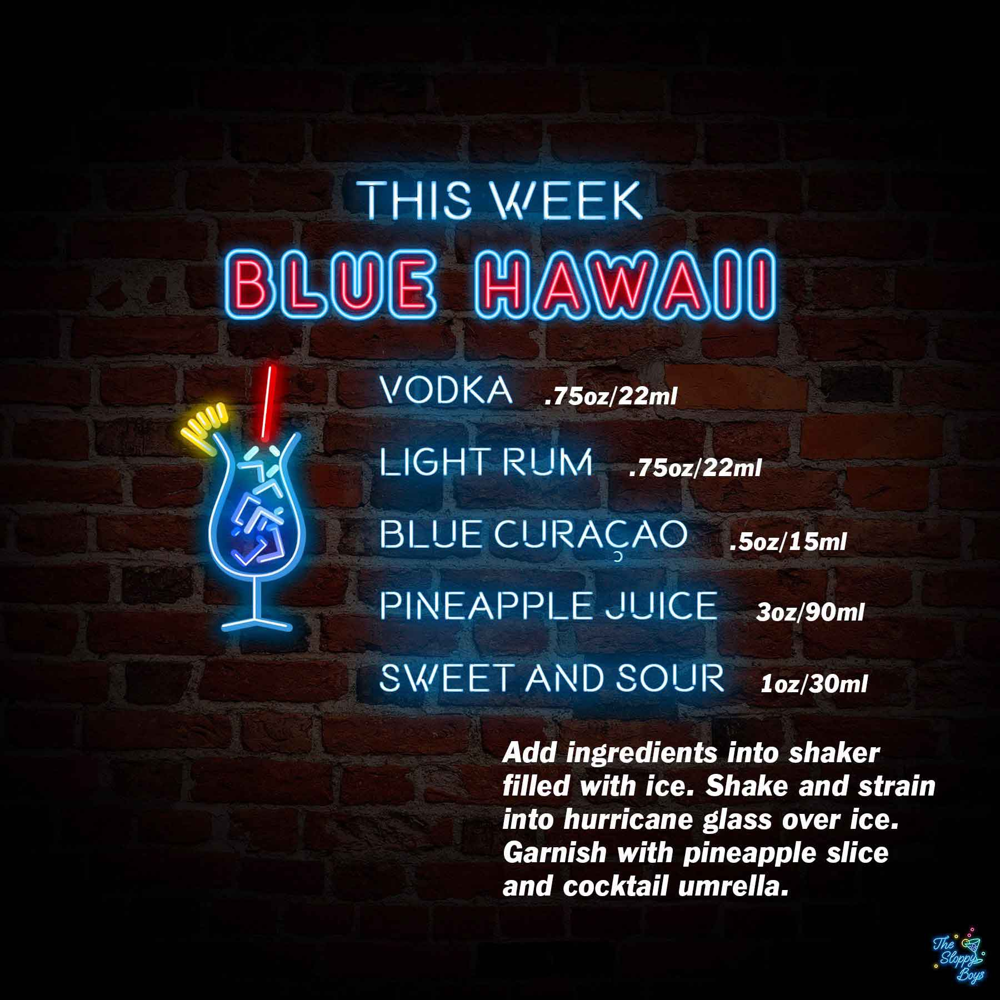

Blue Hawaii
Ingredients
- Vodka (.75oz/22ml)
- Light Rum (.75oz/22ml)
- Blue Curacao (.5oz/15ml)
- Pineapple Juice (3oz/90ml)
- Sweet and Sour (1oz/30ml)
Steps
- Add ingredients into shaker filled with ice.
- Shake and strain into hurricane glass over ice.
- Garnish with pineapple slice and cocktail umbrella.
Notes